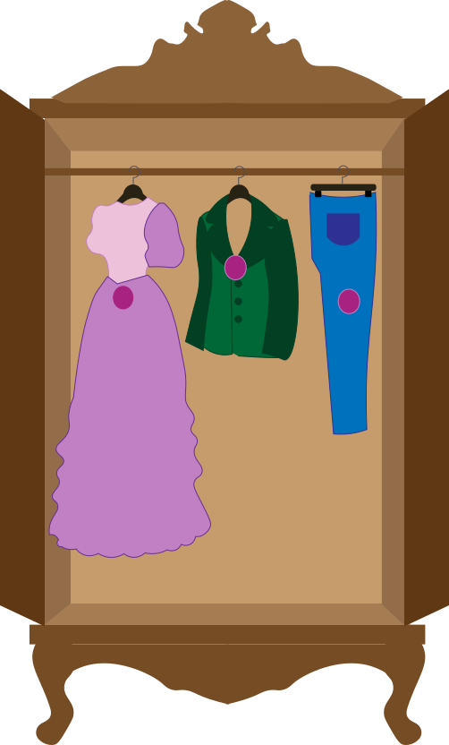

VIKTORIA BERG
PORTFOLIO
Multimediedesign-studerende med fokus på brugeroplevelser, visuel kommunikation og kreative digitale løsninger.

Projekter
Tema 1
Introuge
Mine første projekter på uddannelsen, hvor jeg arbejdede med Figma, visuel kommunikation og samarbejde gennem et præsentationskort og en gruppevideo.
Tema 2
Web
Mit første responsive website udviklet fra bunden med HTML og CSS. Her arbejdede jeg med struktur, layout, navigation og mobile-first webdesign.
Tema 3
UX/UI
Et brugercentreret designprojekt, hvor jeg arbejdede med research, wireframes, prototyper og brugertests for at udvikle en digital løsning med fokus på brugeroplevelsen.
Tema 4
Brugergrænsefladeudvikling
Et interaktivt website udviklet med JavaScript, SVG-grafik og animationer. Projektet gav mig erfaring med frontend-udvikling og dynamiske brugeroplevelser.
Tema 5
Grundlæggende Indhold
Et gruppeprojekt, hvor vi redesignede Chimaeras website gennem research, indholdsproduktion, design og udvikling af en færdig responsiv løsning.
Noget vigtigt?
Har du spørgsmål eller vil du i kontakt?
Kontakt mig